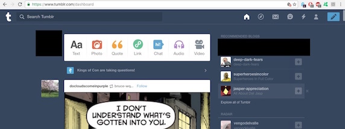
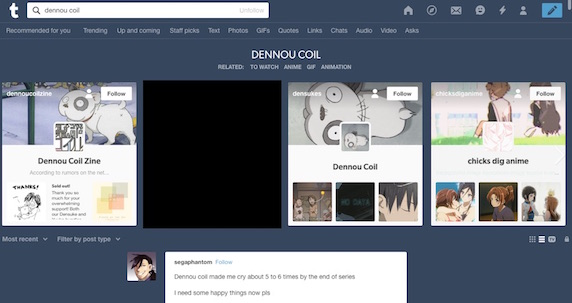

01.12.2017
I tend to not use social media platforms as Facebook, Twitter, or Instagram. However, I am on Tumblr most often. My view on Tumblr current user interface is mixed. On one hand I really like the visual path the designers went with. The dark blue background, and the use of white to indicate content really catches my attention and bring emphasis to what parts of the screen I am interested in. The simple, smooth, and clean rounded edges of the clickable items also made the interface very friendly to me and not overwhelming. The use of solid bright colors to categorize clickable items also had made the interface more friendly. However, this appeal is only really present in the login, dashboard, and setting areas of the website. When one goes to other areas such as exploring or searching posts under a tag, so many elements are shown, and the interface no longer seems friendly and simple. Instead it seems cluttered and personally, overwhelming to may senses (this is also why I do not really enjoy using the Facebook interface). Also another nitpick that I have with how the interface is designed, is the use of endless scroll in certain areas of the site. I can see the advantages to endless scroll and the continuous uploading of new material without a break in viewing. However, this method of pulling up and viewing material only works well for fast and new computers and users with really fast internet. If the users does not have these things they face problems like not being able to see the end of someone’s posts or very slow loading of more material or a page.
 